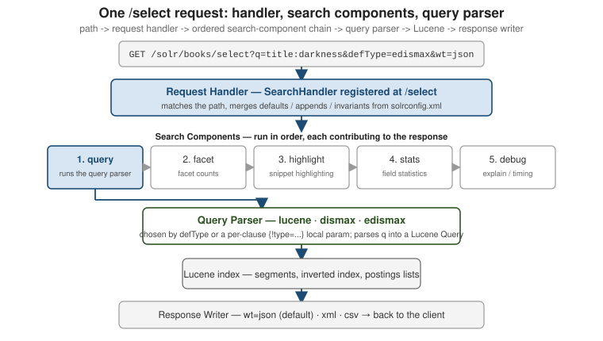

Core concepts & architecture
|
This content was generated with the assistance of AI and should be verified against the official documentation before being relied on in production. |
Solr answers every query against an inverted index built from documents made of fields, and it runs in one of two cluster types — a directory of independent cores, or a ZooKeeper-coordinated set of collections. This page covers that document and index model, the core/collection distinction, the two cluster types, how a single search request actually flows through a node, and what "searchable" means the instant after a write.
Documents, fields, and the inverted index
A Solr document is a set of named fields, sent and returned as JSON (or XML/CSV). One field,
the uniqueKey — id in the default schema — identifies the document within its collection or
core; every other field is whatever the schema says it
is.
{
"id": "1",
"title": "The Left Hand of Darkness",
"author": "Ursula K. Le Guin",
"year_i": 1969,
"genre_ss": ["science fiction", "anthropology"]
}Indexing a document runs each text-family field through an analyzer that tokenizes and
normalizes it into terms; Text analysis covers that
pipeline. For every distinct term, Solr stores a sorted postings list of the document ids that
contain it, plus (when the field type keeps them) the positions the term occurs at within each
document. Terms pointing back at documents, rather than documents listing their own text, is the
inverted index — the same structure and the same reasoning that make it beat a relational
LIKE '%term%' scan are covered for Elasticsearch’s identical Lucene-based index in
Documents, indices & the inverted index; the
mechanism is shared because both engines sit on top of Apache Lucene.
Positions are what make phrase queries and proximity possible, and are also what a plain Boolean combination of terms does not need:
# Boolean logic over terms: default operator is OR unless overridden.
curl "http://localhost:8983/solr/books/select?q=title:darkness+AND+author:leguin"
# Phrase query: consecutive terms at consecutive positions, "the left hand" as a unit.
curl --get "http://localhost:8983/solr/books/select" \
--data-urlencode 'q=title:"the left hand"'
# Proximity: the same two terms within 2 positions of each other, order not required.
curl --get "http://localhost:8983/solr/books/select" \
--data-urlencode 'q=title:"left hand"~2'
# https://solr.apache.org/guide/solr/latest/getting-started/documents-fields-schema-design.htmlA plain term query (title:darkness) is a single postings-list lookup; a phrase or proximity query
additionally intersects the positions stored alongside each posting.
Query basics & parameters and
Query parsers cover the full q syntax, and
Relevance & scoring covers how matches are ranked
once found (BM25, the default similarity since Solr 6).
The denormalized document
Because a query only ever touches the inverted index of the fields present on the matched
document, there is no query-time join across documents the way a relational engine joins rows: a
search for a book cannot, by itself, also filter on a field that lives on a separate "author"
document. The idiomatic fix is denormalization — flatten what you would model as a foreign key in
SQL into the document itself, at index time, the same trade-off
Elasticsearch’s own join workarounds make
for an identical Lucene-based engine. genre_ss above is one instance: rather than a separate
genres table, the genre list is copied straight onto the book document as a multivalued field.
Solr does ship a {!join} query parser and {!subquery} transformer for the narrow cases that
truly need to correlate two independently-indexed document sets at query time, but both are
comparatively expensive (a join walks the whole postings list of the from field, once per
query) and neither expresses a true multi-collection SQL join — treat denormalizing the data as the
default, and a same-collection {!join} as the exception:
# Find books whose publisher_id joins to a publisher document (same collection,
# a "publisher" content type) whose field country_s is "UK".
curl --get "http://localhost:8983/solr/books/select" \
--data-urlencode 'q={!join from=id to=publisher_id}country_s:UK'
# https://solr.apache.org/guide/solr/latest/getting-started/documents-fields-schema-design.htmlCores vs. collections
A core is the physical, single-node unit: one Lucene index directory plus its own copy of
solrconfig.xml and the schema, loaded and administered independently inside a running Solr node.
Every Solr deployment is built out of cores — the question is whether anything coordinates them.
A collection only exists in SolrCloud mode. It is the logical index your application talks to by
name; under the hood a collection is divided into shards (each shard holds a distinct slice of the
documents), and each shard is served by one or more replicas, and every one of those replicas is
implemented as an ordinary core — with a generated name such as books_shard1_replica_n1 — that
ZooKeeper knows about and Solr manages for you.
| Term | What it is |
|---|---|
Core |
One Lucene index + its own config, on one node. The only unit that exists in user-managed mode. |
Collection |
A SolrCloud-only logical index, addressed by name, made up of shards. |
Shard |
A slice of a collection’s documents. |
Replica |
One copy of a shard, implemented as a core; |
bin/solr create -c books -s 1 -rf 1 (the getting-started round-trip) creates a collection named
books with one shard and one replica — which is, concretely, one core. Growing that to more
shards or replicas is SolrCloud architecture and
Collections & configsets; how a request finds the
right shard is Distributed indexing &
search.
Cluster types: user-managed mode vs. SolrCloud
Solr runs as one of two cluster types, and the choice is made per deployment, not per request.
User-managed mode (the older name is "standalone") has no ZooKeeper and no collection concept: you
create cores directly with bin/solr create_core, and if you want redundancy you configure
old-style leader/follower replication between named cores by hand. There is no automatic sharding,
no automatic leader election, and if the write-side core goes down there is no built-in failover — covered in User-managed mode &
replication.
SolrCloud coordinates every node through an Apache ZooKeeper ensemble: configsets live centrally
in ZooKeeper instead of on each node’s filesystem, a collection’s shards and replicas are tracked as
cluster state, one replica per shard is elected leader and takes writes first, and losing a node
still leaves the collection servable as long as one replica of every shard survives. It is the mode
bin/solr start uses by default (with an embedded, single-node ZooKeeper), and the one these pages
otherwise assume — SolrCloud architecture covers the
topology in depth.
# User-managed: a bare core, no ZooKeeper, no collection.
bin/solr start --user-managed
bin/solr create_core -c books_core
# SolrCloud: a collection, sharded/replicated, coordinated via ZooKeeper.
bin/solr start -z localhost:2181
bin/solr create -c books -s 1 -rf 1
# https://solr.apache.org/guide/solr/latest/deployment-guide/cluster-types.htmlFor the full comparison of what each mode guarantees during a node failure, see Solr Cluster Types; the document/field model both modes share is Documents, Fields, and Schema Design, introduced from Introduction to Solr.
The request-processing pipeline
A single /select (or /update) call is not handled by one monolithic function. It is routed to a
request handler, which runs an ordered chain of search components, one of which — query — delegates to a pluggable query parser to turn q into an actual Lucene query:

-
Request handler — registered in
solrconfig.xmlunder a path (/select,/update, a custom one); it is whatGET /solr/<collection>/selectactually resolves to. It suppliesdefaults,appends, andinvariantsfor the parameters of every request that hits it, so a handler can pindefType=edismaxorrows=10without the client repeating it. -
Search components —
query,facet,mlt(more-like-this),highlight,stats,debug, and others, wired to a handler and run in a fixed order unless overridden withfirst-components/last-components. Only the components a request actually needs do work: nofacet.fieldparam means thefacetcomponent is a no-op for that request. -
Query parser — invoked by the
querycomponent to turn theqstring into a LuceneQueryobject.defTypepicks it for the whole request (lucene,dismax,edismax, and more), and a local-params prefix —{!type=... }, or short fortype, just{!edismax}— picks it per clause, as the{!join ...}example above did. Query parsers is the deep dive; Query basics & parameters covers the common request parameters every handler accepts.
# debug=query surfaces which parser actually ran and the Lucene query it built.
curl --get "http://localhost:8983/solr/books/select" \
--data-urlencode 'q=title:darkness AND author:leguin' \
--data-urlencode 'defType=edismax' \
--data-urlencode 'debug=query'{
"debug": {
"rawquerystring": "title:darkness AND author:leguin",
"querystring": "title:darkness AND author:leguin",
"parsedquery": "+title:darkness +author:leguin",
"QParser": "ExtendedDismaxQParser"
}
}Wiring your own handler/component/parser combinations in solrconfig.xml, and the caching layers
each stage can hit, is Configuration & caches.
Near-real-time search
A write to /update does not make a document searchable by itself — it is appended to Solr’s
transaction log and buffered in memory. A document becomes visible to search only once a commit
opens a new (or reopened) Lucene searcher over it:
-
A hard commit (
commit=true, or the periodicautoCommitinsolrconfig.xml) fsyncs the index and truncates the transaction log — the durability boundary. -
A soft commit (
softCommit=true, orautoSoftCommit) opens a new searcher over what is already in memory without the fsync, so it is cheap and fast but not itself a durability guarantee; it is the mechanism behind Solr’s near-real-time (NRT) search, typically run every second or so.
# Every getting-started example so far used a hard commit on every write.
curl "http://localhost:8983/solr/books/update?commit=true" \
-H 'Content-Type: application/json' \
-d '[{"id": "2", "title": "A Wizard of Earthsea", "author": "Ursula K. Le Guin", "year_i": 1968}]'
# Cheaper for a steady write stream: commit the write to the transaction log now,
# but only make it visible on the next scheduled soft commit.
curl "http://localhost:8983/solr/books/update?softCommit=false" \
-H 'Content-Type: application/json' \
-d '[{"id": "3", "title": "The Dispossessed", "author": "Ursula K. Le Guin", "year_i": 1974}]'// SolrJ: index without an explicit commit and let autoSoftCommit make it visible.
SolrInputDocument doc = new SolrInputDocument();
doc.addField("id", "4");
doc.addField("title", "The Word for World Is Forest");
try (SolrClient client = new Http2SolrClient.Builder("http://localhost:8983/solr").build()) {
client.add("books", doc); // no client.commit() call
}In a fresh, unconfigured collection neither autoCommit nor autoSoftCommit is set, so a document
added without an explicit commit/softCommit parameter simply sits invisible until one is issued — tune both intervals for your write rate, and choose which parameter each write should use, in
Indexing & updates; updating an already-indexed
document (atomic updates, optimistic concurrency with _version_) is
Partial updates & concurrency.
Continue with Schema & fields, or jump to SolrCloud architecture for the shard/replica topology behind a collection.